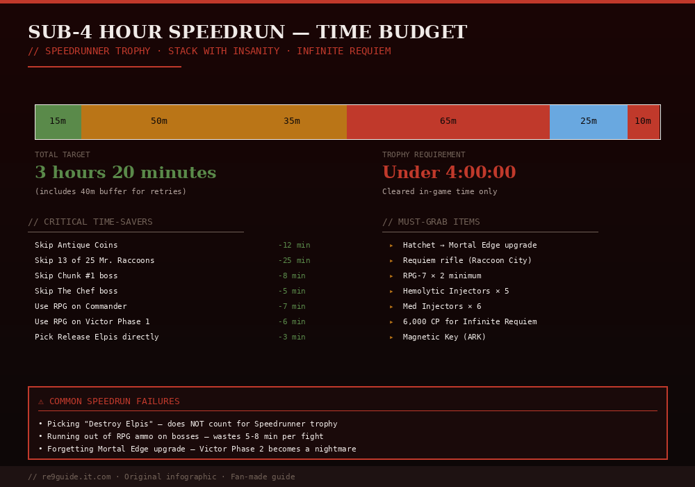

How to Beat Resident Evil Requiem in Under 4 Hours — Speedrun Guide
PUBLISHED MAY 2026 · 12 MIN READ · SPEEDRUN STRATEGY
⚠ SPOILER LEVEL: MEDIUM
EDITOR:Jachin (Seoul)
GAME VERSION:v1.02 (May 2026 patch)
LAST VERIFIED:2026-05-10
PLATFORM TESTED:PS5 / Steam
A complete speedrun guide for Resident Evil Requiem. Target time: under 4 hours. Covers optimal route, mandatory skips, weapon loadout, boss strategies, and the easiest way to unlock the Speedrunner Silver trophy. Best paired with an Insanity playthrough using Infinite Requiem for the Gold trophy stack.

Fig 1. Time budget across 6 game segments. Target is 3:20 leaving a 40-minute buffer for retries. Skip optional bosses and collectibles to save up to 66 minutes.
// TARGET TIME SPLITS · SUB 4:00:00
Wrenwood (intro)
12:00
0:12
Care Center (Grace)
55:00
1:07
Care Center (Leon)
25:00
1:32
Raccoon City
60:00
2:32
ARK Facility
55:00
3:27
Victor Gideon
15:00
3:42
TOTAL TARGET
─
3:42
Speedrun setup requirements
💡 Best speedrun stack: Run on Insanity with Infinite Requiem equipped. This satisfies the Speedrunner trophy (under 5 hours) AND the Remarkable Agent trophy (Insanity completion) in a single playthrough.
// PRE-RUN UNLOCKS
Complete the main story once — unlocks Insanity + Special Content Store
Buy Infinite Requiem at Special Content Store (~6,000 CP)
Optional: Buy Infinite RPG-7 (~8,000 CP) for Victor backup
Have Mortal Edge Hatchet from previous run (carries over via NG+)
// IN-GAME SETTINGS
Set cutscene skip ON in options menu
Set auto-aim to STRONG (saves precious seconds)
Disable aim assist toggle for faster transitions
Bind quick-turn to a comfortable button
Mandatory skips (saves ~45 minutes total)
// SAVES 6 MINSkip all 25 Mr. Raccoons
Don't bother. Speedrun routes don't need Tier 3 weapon upgrades. Skip every Memoriam unless it's directly on your path.
// SAVES 8 MINSkip 4 of 5 safes (only do Workshop Safe)
The Workshop Safe (R60·L40·R80) gives the Raccoon Roundup Map — useless for speedrun. Skip all safes entirely; bypass the No Safe Is Safe trophy.
Don't fight. The Chef and Chunk #1 are completely skippable. The Eye Spy Charm is nice but not necessary with Infinite Requiem.
// SAVES 5 MINSkip all 75 Files
Files don't gate any progression. Run past every single one. The "Case Closed!" trophy is for collection runs, not speedruns.
// SAVES 8 MINSkip the Garden side quest
Plant Seedlings = optional. The Green Thumb trophy doesn't stack with Speedrunner.
// SAVES 6 MINSkip the Roulette Wheel easter egg
RNG-dependent and saves only 1 Antique Coin. Not worth the time investment.
Section-by-section route
// WRENWOOD (TARGET: 12:00)
Linear opening. No skip opportunities — just play through the tutorial as fast as possible. Mash through dialogue, parry the tutorial enemy quickly, follow the corridor.
Skip cutscenes immediately (button prompt)
Don't pick up early ammo — you'll get plenty later
Run past zombies; don't engage
// CARE CENTER GRACE (TARGET: 55:00)
Longest section. Solve all 3 Quartz Puzzles fast — they're mandatory. Skip everything else.
Sun Quartz (Lead Researcher's Office): Star · Sun · Moon · Sun
Moon Quartz (Chairman's Office): Moon · Sun · Star · Moon
Star Quartz (VIP Suite): Hourglass solution (commonly Sun · Star · Moon · Star)
Critical: Solve Blood Specimen 1 (Denatured) for Hemolytic Injectors — you'll need 2-3 of them later. Skip Specimens 2 and 3.
// CARE CENTER LEON (TARGET: 25:00)
Pick up MSBG 500 immediately at the Attic. Use Infinite Requiem to one-shot Chunk #2 in the Attic. Run straight to the courtyard exit.
// RACCOON CITY (TARGET: 60:00)
Multiple boss fights:
Mr. X chase — Don't fight, just run the route (see Mr. X guide)
Super Tyrant — Heart shots with Infinite Requiem. ~90 seconds
Titan Spinner — Cover-and-burst with Infinite Requiem. ~3 minutes
Critical: Don't waste time at Gun Shop Kendo's stash — your Infinite Requiem is all you need.